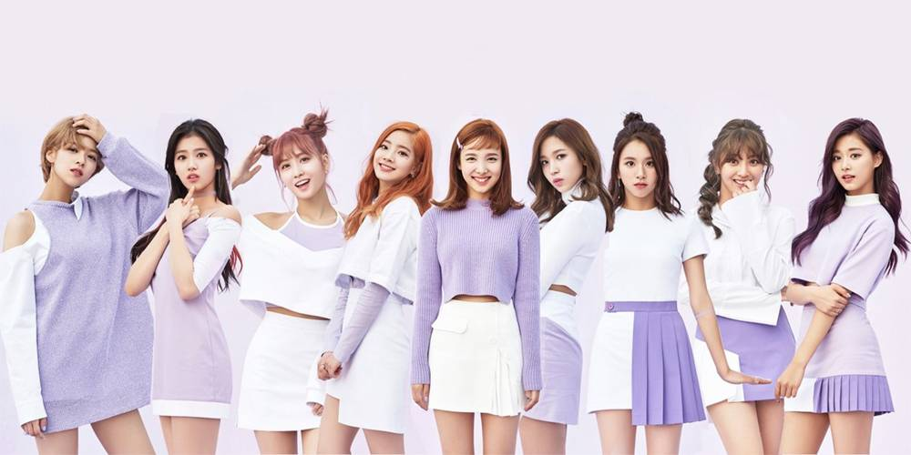
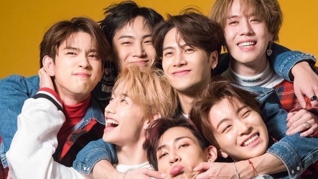
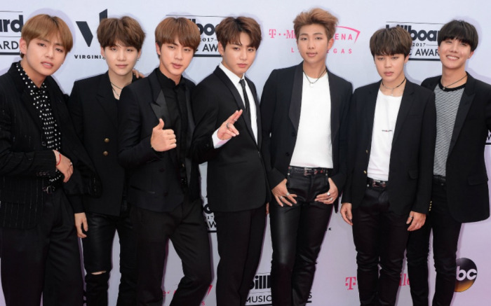

- 
TWICE
Описание группы: TWICE — женская группа JYP Entertainment состоящая из девяти участниц,
которая была создана в 2015 г. через реалити шоу (на выбывание) «Sixteen».
Первоначально в шоу участвовало шестнадцать стажерок JYP, из которых, по окончанию шоу,
осталось всего девять стажёрок: пять участниц из Южной Кореи, три участницы из Японии и одна из Тайваня.
Название группы было выбрано не случайно. По мнению агентства, участницы способны «поразить своих фанатов
[один] раз через слух и дважды через глаза (визуально).
INSTAGRAM
- 
GOT7
Описание группы: Got7 – южнокорейский бойбенд,
сформированный в 2014 году компанией JYP Entertainment. Коллектив состоит из семи участников: Джейби (он же лидер),
Марка, Джексона, Чинёна, Ёнджэ, Бэм-Бэма и Югёма. Дебют состоялся в январе 2014 года с мини-альбомом Got It?, который занял второе место
в Gaon Albums Chart и вершину в Billboard World Albums Chart.
Got7 получили много внимания благодаря своим выступлениям, содержащим элементы трикинга
INSTAGRAM
- 
BTS
Описание группы: BTS – южнокорейская группа, состоящая из семи участников.
На данный момент являются одной из популярнейших мужских групп в Южной Корее, с самым большим фэндомом.
Название группы значит «пуленепробиваемые». Изначально группа должна была дебютировать в 2011 году, но дебют отменили.
За 2 года произошли изменения в составе группы. После дебюта BTS быстро получили известность и стали лучшими «новичками» 2013 года.
INSTAGRAM